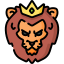

Board game based off the Disney production ”The Lion King” in C++. Use elements of classes, arrays, vectors, files, randomness, etc. to come together and create a simple and fun game to play, while showcasing fundamental programming concepts.
Helped develop a Python-based fall detection app through the CABPES JETS Program in Spring 2023. The app detects falls and, if the impact surpasses a set threshold, automatically alerts emergency services. Helpful for the elderly and disabled.
Created a game using C++ where a player could traverse through different dungeons, collecting different weapons and items of different levels throughout. Utilized data strucutres like hash tables, linked lists, etc., while also using traversal methods like Dijkstras algorithim as well.